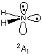

| Conver=n | optimization- cycles | final energy (Hartree) |
|---|---|---|
| 4 | 6 | -112.354346245 |
| 5 | 7 | -112.354347141 |
| 6 | 8 | -112.354347141 |
| 7 | 9 | -112.354347141 |
| 8 | 10 | -112.354347141 |
| 9 | 11 | -112.354347141 |
#ROHF/STO-3G scf=(symm,tight) rohf/STO-3G amide radical NH2, 2B1 state 0 2 N1 H2 1 r2 H3 1 r2 2 a3 r2=1.05726795 a3=100.0637224 |
Harris functional with IExCor= 205 diagonalized for initial guess.
ExpMin= 1.69D-01 ExpMax= 9.91D+01 ExpMxC= 9.91D+01 IAcc=1 IRadAn= 1 AccDes= 1.00D-06
HarFok: IExCor= 205 AccDes= 1.00D-06 IRadAn= 1 IDoV=1
ScaDFX= 1.000000 1.000000 1.000000 1.000000
Initial guess orbital symmetries:
Occupied (A1) (A1) (B2) (A1) (B1)
Virtual (A1) (B2)
The electronic state of the initial guess is 2-B1.
Requested convergence on RMS density matrix=1.00D-08 within 128 cycles.
Requested convergence on MAX density matrix=1.00D-06.
Requested convergence on energy=1.00D-06.
No special actions if energy rises.
Keep R1 and R2 integrals in memory in canonical form, NReq= 419815.
SCF Done: E(ROHF) = -54.8368134090 A.U. after 7 cycles
Convg = 0.5123D-11 -V/T = 2.0047
S**2 = 0.7500
Annihilation of the first spin contaminant:
S**2 before annihilation 0.7500, after 0.7500
**********************************************************************
Population analysis using the SCF density.
**********************************************************************
Orbital symmetries:
Occupied (A1) (A1) (B2) (A1) (B1)
Virtual (A1) (B2)
The electronic state is 2-B1.
The Harris functional guess predicts a highest (singly) occupied orbital of "(B1)" symmetry leading to
a doublet 2B1 state in the converged wavefunction. The SCF algorithm retains
the number of occupied orbitals in each irreducible representation (3*A1, 1*B2, 1*B1).
The first unoccupied
molecular orbital (LUMO) is of A1 symmetry. Interchange of the SOMO and LUMO will in this
case lead to occupation of orbitals of different symmetry and thus to a different electronic state.
Adjustment of the initial guess orbitals can be achieved with the guess=alter
keyword and definition of the list of orbital exchanges after the geometry definition. In
the following input orbitals 5 and 6 of the initial guess will be interchanged.
#ROHF/STO-3G scf=(symm,tight) guess=alter rohf/STO-3G opt amide radical NH2, 2A1 state 0 2 N1 H2 1 r2 H3 1 r2 2 a3 r2=1.05726795 a3=100.0637224 5 6 |  |
Harris functional with IExCor= 205 diagonalized for initial guess.
ExpMin= 1.69D-01 ExpMax= 9.91D+01 ExpMxC= 9.91D+01 IAcc=1 IRadAn= 1 AccDes= 1.00D-06
HarFok: IExCor= 205 AccDes= 1.00D-06 IRadAn= 1 IDoV=1
ScaDFX= 1.000000 1.000000 1.000000 1.000000
Pairs of Alpha orbitals switched:
5 6
Initial guess orbital symmetries:
Occupied (A1) (A1) (B2) (A1) (A1)
Virtual (B1) (B2)
The electronic state of the initial guess is 2-A1.
Requested convergence on RMS density matrix=1.00D-08 within 128 cycles.
Requested convergence on MAX density matrix=1.00D-06.
Requested convergence on energy=1.00D-06.
No special actions if energy rises.
Keep R1 and R2 integrals in memory in canonical form, NReq= 419815.
SCF Done: E(ROHF) = -54.3257900934 A.U. after 9 cycles
Convg = 0.7698D-09 -V/T = 1.9800
S**2 = 0.7500
Annihilation of the first spin contaminant:
S**2 before annihilation 0.7500, after 0.7500
**********************************************************************
Population analysis using the SCF density.
**********************************************************************
Orbital symmetries:
Occupied (A1) (A1) (B2) (A1) (A1)
Virtual (B1) (B2)
The electronic state is 2-A1.
%chk=/scr1/testit.chk #ROHF/STO-3G scf=(symm,tight) guess=read geom=check rohf/STO-3G opt amide radical NH2, 2A1 state 0 2Comparison of the two states optimized here shows that the 2B1 state based on the default Harris functional guess is energetically more favorable at -54.8368134090 au than the 2A1 state at -54.3257900934 au. Thus, the default guess arrives at the electronically more favorable state. This is, however, not always the case.
SCF Done: E(UHF) = -54.8392961557 A.U. after 10 cycles
Convg = 0.4780D-08 -V/T = 2.0048
S**2 = 0.7585
Annihilation of the first spin contaminant:
S**2 before annihilation 0.7585, after 0.7500
**********************************************************************
Population analysis using the SCF density.
**********************************************************************
Orbital symmetries:
Alpha Orbitals:
Occupied (A1) (A1) (B2) (B1) (A1)
Virtual (A1) (B2)
Beta Orbitals:
Occupied (A1) (A1) (B2) (A1)
Virtual (B1) (A1) (B2)
The electronic state is 2-B1.
Comparison of the occupied alpha and beta spin orbitals shows that the additional alpha electron
is located in an orbital of B1 symmetry. The complementary beta spin orbital is not occupied.
Excitation of the electron in the highest lying beta orbital (A1 symmetry) to the next higher
beta orbital (of B1 symmetry) changes the situation such that in both the alpha and beta orbitals
there is one B1 and one B2 occupied orbital while the number of alpha orbitals with A1 symmetry
exceeds that of the beta orbitals by one:
In order to effect the interchange of beta orbitals 4 and 5 the following input file
will be used. Please observe the two empty lines after the geometry input. The first
empty line terminates the geomtry input section, the second empty line specifies no changes
in the alpha spin orbitals, and the following line specifies the changes in beta spin
orbitals:
#UHF/STO-3G scf=(symm,tight) guess=alter
uhf/STO-3G opt amide radical NH2, 2A1 state
0 2
N1
H2 1 r2
H3 1 r2 2 a3
r2=1.05808265
a3=100.14734623
one empty line!!
a second empty line!!
4 5
final empty line!!!
The final orbital ordering obtained after the SCF in this case is:
SCF Done: E(UHF) = -54.7318269247 A.U. after 10 cycles
Convg = 0.6550D-08 -V/T = 2.0029
S**2 = 0.7508
Annihilation of the first spin contaminant:
S**2 before annihilation 0.7508, after 0.7500
**********************************************************************
Population analysis using the SCF density.
**********************************************************************
Orbital symmetries:
Alpha Orbitals:
Occupied (A1) (A1) (B2) (A1) (B1)
Virtual (A1) (B2)
Beta Orbitals:
Occupied (A1) (A1) (B2) (B1)
Virtual (A1) (A1) (B2)
The electronic state is 2-A1.
Please observe that the difference between the ROHF/STO-3G (at -54.3257900934 au) and
the UHF/STO-3G (at -54.7318269247 au) energies of the 2A1 state is much
larger at 1066 kJ/mol than found for the 2B1 state at the same
theoretical levels.
There are two different SCF algorithms available in Gaussian. The default
algorithm DIIS is quite fast and works well for most
systems. For problematic cases the quadratically convergent
(QC) algorithm is much more reliable but also much slower than DIIS. The latter option is
used with the SCF=QC keyword and becomes quite usefull
in the case of convergence problems with the default DIIS algorithm.
In the case of severe convergence problems, a few further strategies exist to approach the
problem. As a first point it is important to check the geometry of the system under
investigation. Errors in the Z-Matrix definition, which position atomic centers too
close together, often result in convergence problems during SCF calculations.
Also, it is often found that self consistency is achieved with one method, but not another.
It is therefore quite helpful to calculate a wavefunction first with one method
and then use the converged wavefunction as the initial guess for another calculation. It
is, for example frequently found that Hartree-Fock calculations converge more readily
than DFT calculations and initial calculation of the HF wavefunction can therefore aid
in getting the DFT calculation started. Ultimately, the convergence behaviour also
improves with reduced electron numbers. If, for example, calculations for neutral
radicals do not converge, a converged wavefunction can often be obtained for the
corresponding cationic systems (lacking one electron). The cation wavefunction can then
be used as the initial guess of the radical system. If still no convergence can be achieved:
go look for another project!
last changes: 27.11.2006, HZ questions & comments to: zipse@cup.uni-muenchen.de